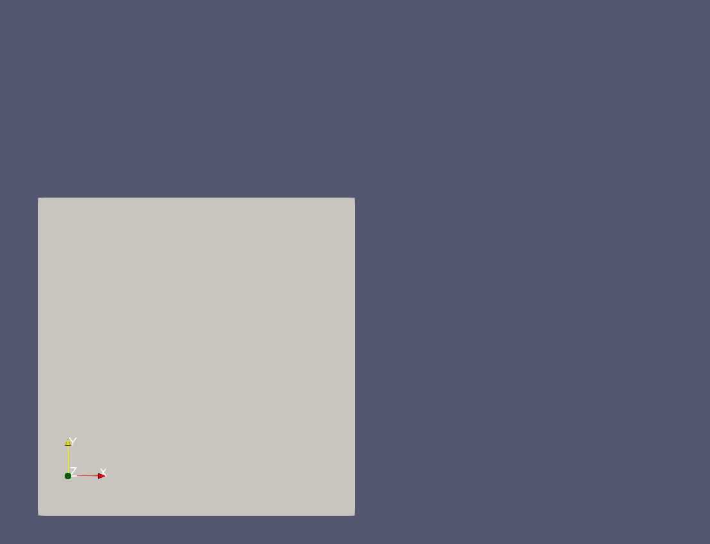

- extrusion_vectorThe direction and length of the extrusion as a vector
C++ Type:libMesh::VectorValue<double>
Unit:(no unit assumed)
Controllable:No
Description:The direction and length of the extrusion as a vector
- inputThe mesh we want to modify
C++ Type:MeshGeneratorName
Controllable:No
Description:The mesh we want to modify
- sidesetThe sideset (boundary) that will be extruded
C++ Type:BoundaryName
Controllable:No
Description:The sideset (boundary) that will be extruded
SideSetExtruderGenerator
Takes a 1D or 2D mesh and extrudes a selected sideset along the specified axis.
The SideSetExtruderGenerator differs from the MeshExtruderGenerator in that the extruded block has the same dimensionality as the input mesh.
commentnote
The SideSetExtruderGenerator will not throw any errors if you extrude a mesh through (overlap with) another mesh or another part of the mesh. It will throw an error if the extrusion vector would create a mesh with a negative determinant (the nested MeshExtruderGenerator throws the error).
warningwarning
The output will have no sidesets, even the sideset which served for extrusion will be removed. The user is expected to use the other sideset generating generators on the output if sidesets are needed.
Visual Example
The following 2D mesh has the right sideset extruded using a SideSetExtruderGenerator with the (1, 0.5, 0) vector.

Before: a square, with sidesets on each side.

After, the right sideset has been extruded.
Implementation details
SideSetExtruderGenerator is actually a mere wrapper of 4 other generators:
a LowerDBlockFromSidesetGenerator to generate a block from the sideset
a BlockToMeshConverterGenerator to generate a block with the mesh
a MeshExtruderGenerator to extrude the new mesh
a StitchedMeshGenerator to stitch the original mesh and the extruded mesh.
As such, the SideSetExtruderGenerator is exactly equivalent to the output of a recipe similar to the one below. If you are needing to tweak the output of SideSetExtruderGenerator, it may be preferable to use these generators instead. SideSetExtruderGenerator uses the default parameters of these sub-generators.
[Mesh]
# Note: don't change the parameters without also changing extrude_square,
# as they should be using identical file(s) in gold
[square]
type = GeneratedMeshGenerator
dim = 2
[]
[extrude_right]
type = SideSetExtruderGenerator
input = square
sideset = 'right'
extrusion_vector = '1 0.5 0'
num_layers = 3
[]
[]
The input above should be equivalent to the input shown below.
[Mesh]
# Note: don't change the parameters without also changing extrude_square,
# as they should be using identical file(s) in gold
[square]
type = GeneratedMeshGenerator
dim = 2
[]
[lowerDblock]
type = LowerDBlockFromSidesetGenerator
input = square
new_block_name = "extrusions0"
sidesets = "right"
[]
[separateMesh]
type = BlockToMeshConverterGenerator
input = lowerDblock
target_blocks = extrusions0
[]
[extrude]
type = MeshExtruderGenerator
input = separateMesh
num_layers = 3
extrusion_vector = '1 0.5 0'
bottom_sideset = 'new_bottom'
top_sideset = 'new_top'
[]
[stitch]
type = StitchedMeshGenerator
inputs = 'square extrude'
stitch_boundaries_pairs = 'right new_bottom'
[]
[]
Input Parameters
- num_layers1The number of layers in the extruded mesh
Default:1
C++ Type:unsigned int
Controllable:No
Description:The number of layers in the extruded mesh
Optional Parameters
- enableTrueSet the enabled status of the MooseObject.
Default:True
C++ Type:bool
Controllable:No
Description:Set the enabled status of the MooseObject.
- save_with_nameKeep the mesh from this mesh generator in memory with the name specified
C++ Type:std::string
Controllable:No
Description:Keep the mesh from this mesh generator in memory with the name specified
Advanced Parameters
- nemesisFalseWhether or not to output the mesh file in the nemesisformat (only if output = true)
Default:False
C++ Type:bool
Controllable:No
Description:Whether or not to output the mesh file in the nemesisformat (only if output = true)
- outputFalseWhether or not to output the mesh file after generating the mesh
Default:False
C++ Type:bool
Controllable:No
Description:Whether or not to output the mesh file after generating the mesh
- show_infoFalseWhether or not to show mesh info after generating the mesh (bounding box, element types, sidesets, nodesets, subdomains, etc)
Default:False
C++ Type:bool
Controllable:No
Description:Whether or not to show mesh info after generating the mesh (bounding box, element types, sidesets, nodesets, subdomains, etc)